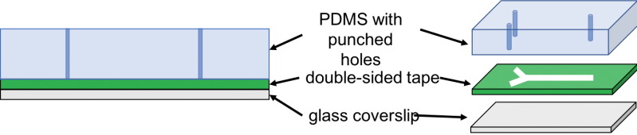
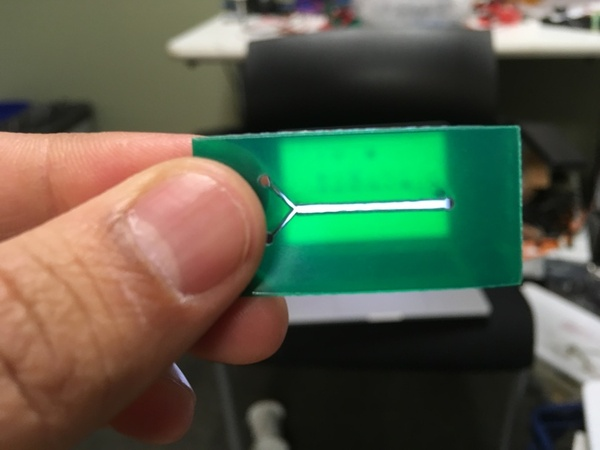
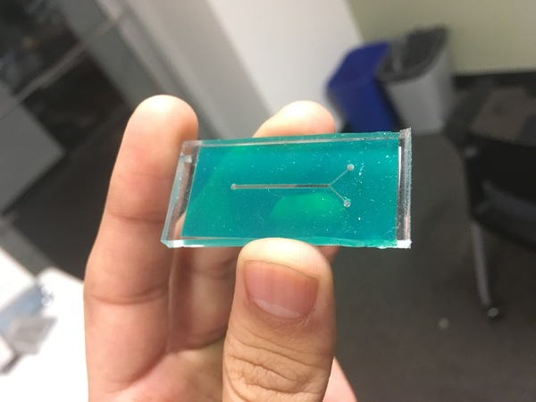

HTGAA : Engineering the Gut Microbiome
Offered in 2019 , Updated 05/30/2023 David Sun Kong (MIT Media Lab) and Vijay Yajnik
Pre-reading
The human gut microbiota is one of the most densely populated ecosystems of microorganisms on earth. With an estimated 100 trillion microorganisms, the gut is an extraordinarily complex system of microbe-microbe and microbe-host interactions. A growing body of research is beginning to elucidate the diverse impacts the gut microbiota plays in human health and development, from nutrition, to disease, and even cognition. Recently, with the success of fecal matter transplants (FMTs) to treat infectious disease, microbes are emerging as a unique therapeutic. Model systems to both prototype and study complex polymicrobial systems are a necessity for producing robust microbial communities that can be engineered at both the genetic level (subcellular) and population level (multicellular).
Wet Lab Assignments
Example Lab
Isolate a colony from your skin and mouth and identify them.
- Place your palm on the LB+Agar plate or use cotton swabs to transfer your skin and oral microbiome to streak LB plates: one plate with your skin microbiome and one plate with oral microbiome.
- Write your name, date and body part from which the microbes are taken from.
- Incubate the plates overnight at 37°C.
- Pick the colonies that you would like to sequence, isolate the colony and restreak them on a new LB+agar plate the following day. Write your name, date and body part from which the microbes are taken from.
- Incubate the plates overnight at 37°C. Send them to Genewiz for 16s rrna sequencing.
- Once the sequencing results are out blast them using Blast to find the closest match.
Make a tape based microfluidic device to confine bacteria and image them using a microscope.

Image source
- Take one of the petridishes with cured PDMS and laser-cut double sided tape [Tape]. Here is one of the lasercut tape.
- Use a pen knife to cut a slab of PDMS of the size of laser-cut tape.
- Use tweezers to peel off one side of the tape and adhere the exposed side to the PDMS slab. Press hard enough to make sure the tape surface is flat. Remove excess tape if there is any.
- Make holes through the PDMS by punching the inlets and outlet of the lasercut tape using a biopsy puncher.
- Make sure the hole is not clogged with any debris of PDMS.
- Peel off the other side of the tape and adhere it to the coverslip or glass slide.
- Cut three lengths of tubing at an angle (arbitrary) and length of 5cm-10cm each. Insert the tubing using tweezers in the inlets and outlet.
- Place the device under a microscope, use a double sided tape to lock it in a place and adjust your magnification (40x objective or 60x objective) to see the microchannel. Use two syringes to inject cell culture into the inlet tubing.
- Use your camera to take pictures.


Homework Questions
Acknowledgememts
Useful Resources
- Readings on Microbiome
- Microfluidics
-
Genetics of IBD
- Jostins et al Host Microbiome have shaped the genetic architecture of Inflammatory Bowel Disease. Nature 491:119-24 2012
-
Microbiome therapeutics in IBD
- Cohen et al. Genetic Factors and the Intestinal Microbiome Guide Development of Microbe Based Therapies for Inflammatory Bowel Diseases. Gastroenterology in press (accepted March 2, 2019)
- Somineni and Kugathasan The Microbiome in Patients with Inflammatory Diseases. Clinical Gastroenterology and Hepatology 17:23-255, 2019
-
Healthy microbiome - Human Microbiome Project (HMP)
- Human Microbiome Consortium: Structure, Function and Diversity of the Healthy Microbiome Nature 486:207-14
- Human Microbiome Consortium: A Framework for Human Microbiome Research Nature 486:215-12
- Glibert et al, Current Understanding of the human microbiome. Nature Medicine 24:392-400, 2018
-
Commensal Transmission and FMT
- Browne et al. Transmission of gut microbiota: spreading of health. Nature Reviews Microbiology 9:531-543, 2017
- Effect of fecal microbiota transplantation on 8-week remission in patients with Ulcerative Colitis: A Randomized Clinical Trial JAMA 321:156-164, 2109
- Krajicek et al. Nuts and Bolts of Fecal Microbiota Transplantation Clin Gastro Hepatol 17:345-352, 2019
-
Dysbiosis and diseases
- Frank et al Molecular-Phylogenetic characterization of Microbial Community imbalances in human inflammatory Bowel Diseases Proc Natl Acad Sci USA 104:13780-5, 2007
- Yilmaz et al. Microbial Network Disturbances in relapsing refractory Crohn’s Disease. Nature Medicine March 7, 2019 Epub ahead of print
-
Host Microbe interactions
- Dorrestein et al Finding the missing links among Metabolites, Microbes and the Host. Immunity 40:824-832, 2014
- Yilmaz et al. Microbial Network Disturbances in relapsing refractory Crohn’s Disease. Nature Medicine March 7, 2019 Epub ahead of print
- Blander et al Regulation of Inflammation by Microbiota interactions with the Host. Nature Immunology 18:851-860, 2017
Readings on Microbiome
Opentrons Script
To be added